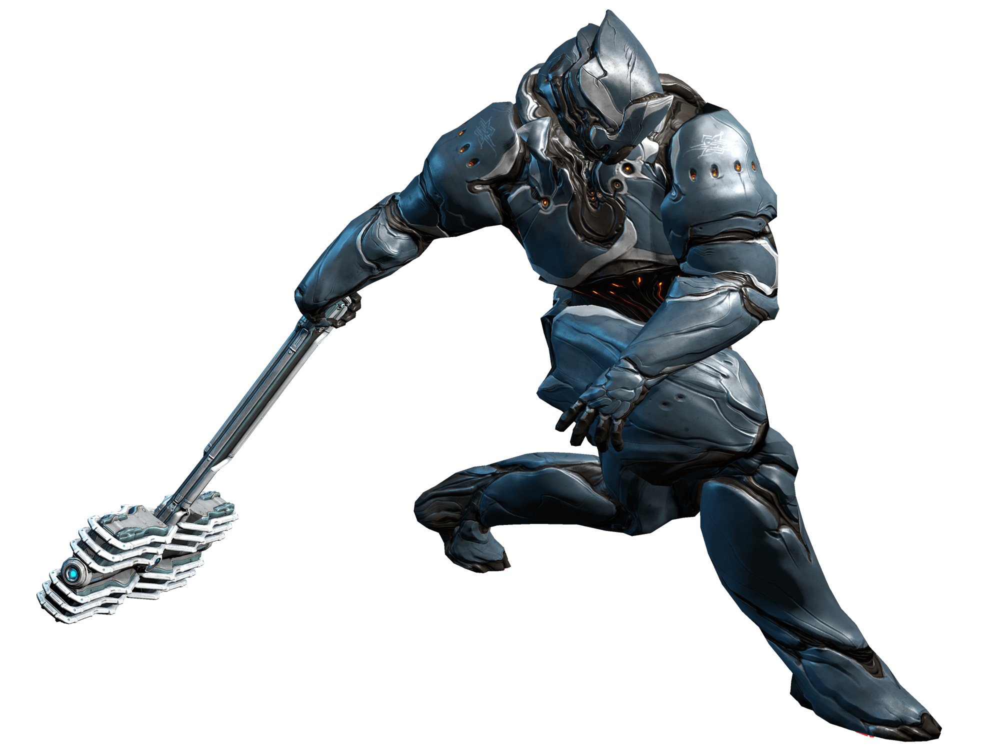
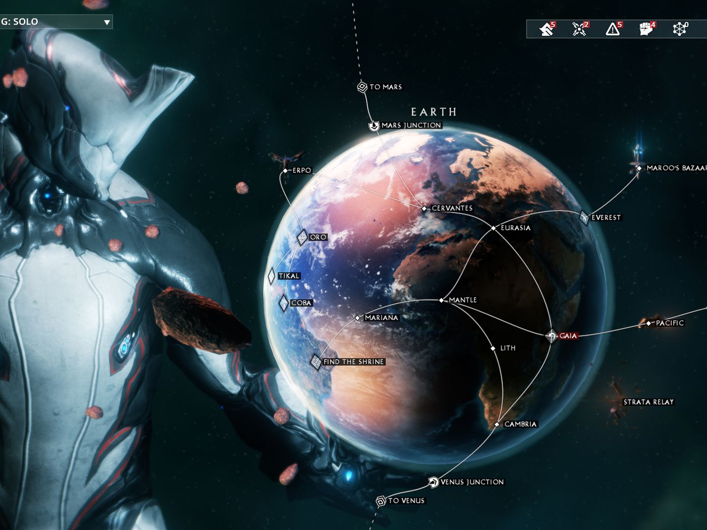
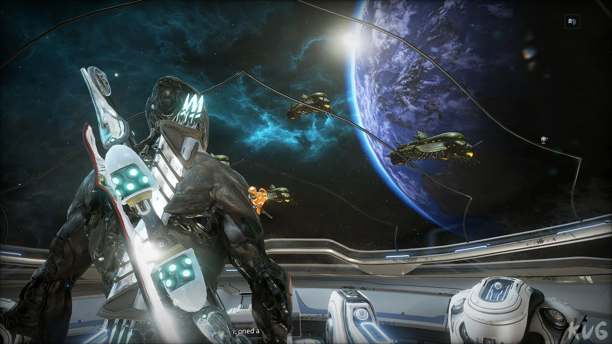
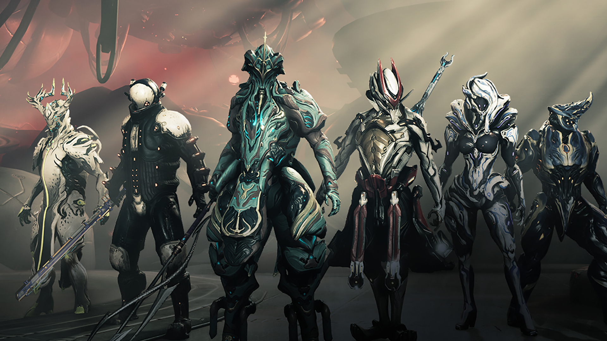
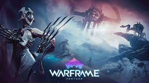

Warframe is a free-to-play action role-playing third-person shooter multiplayer online game developed and published by Digital Extremes. Released for Windows personal computers in March 2013, it was ported to the PlayStation 4 in November 2013, the Xbox One in September 2014, the Nintendo Switch in November 2018, the PlayStation 5 in November 2020 and the Xbox Series X/S in April 2021. Support for cross-platform play and cross-save, as well as ports to mobile devices, are planned for the second half of 2021. The game is in open beta.

Set in the future, players control members of the Tenno, a race of ancient warriors who have awoken from a century-long cryosleep as they awake again on Earth, with their memories about the Old War lost for the moment. In the Solar system, they find themselves at war with the Grineer, a matriarchal race of militarized and deteriorated human clones built upon metal, blood, and war; the Corpus, a mega-corporation with advanced robotics and laser technology built upon profit; the Infested, disfigured victims of the Technocyte virus; and the Sentients, a race of self-replicating machines made by a long-dead transhuman race known as the Orokin. The Lotus guides the Tenno through difficult situations, as well as gives hints which help the player defeat enemies. To fight back, the Tenno use bio-mechanical suits, the eponymous Warframes, to channel their unique abilities.[2]All of the factions encountered in the game, including the Tenno, were created by or are splinter groups of the old Orokin Empire, which the Tenno learns was an ancient fallen civilization and former reigning power in the Solar system. Although most of them are long dead by the time of the Tenno's awakening, their lingering presence can be still be felt throughout the Solar system. Before their fall, the Orokin had attempted to conquer the galaxy and sent out colony ships through the Void, a trans-dimensional space that enabled fast travel between stellar systems. None of these residential ships returned, and those they had loaded with Sentients returns with the Sentients now decided to wipe out the Orokin, leading to the Old War, the creation of the Tenno, and finally, the collapse of the Empire.

Warframe is an online action game that includes elements of shooters, RPG, and stealth games.The player starts out with a silent pseudo-protagonist in the form of an anthropomorphous biomechanical combat unit called 'Warframe' possessing supernatural agility and special abilities, a selection of basic weapons (primary, secondary and melee) and a space ship called 'Orbiter'. With one Goal at this point to explore the Star chart[4] and Only later, in the course of the game, the player gains direct control of the 'Operator', which is the true Tenno protagonist in physical form (and no longer silent). The Operator is able to physically manifest themselves in the environment by projecting out of the Warframe, and disappear by resuming control of it (a process called 'Transference'), and possesses abilities of its own. Subsequent to that, the Operator is able to Transfer into a larger, purely mechanical combat unit called 'Necramech', which is the technological precursor to Warframes. Players can engage in space-bound combat using an auxiliary combat platform called 'Archwing', mounted on a Warframe, which comes with a new set of abilities. Necramechs and Archwings (in space combat) don't use Warframe weapons, but heavy ranged weapons called 'Archguns'. However, the player can make an Archgun wieldable even by Warframes. Late in 2019, an update named Empyrean was introduced to the game letting players pilot and manage a distinct space ship called 'Railjack', which is a combat vessel unlike the Orbiter. This was designed as a co-op experience with up to four people working together, doing different jobs to keep the ship operational while destroying enemy ships. A Railjack-focused update is planned for mid-2021, including expanded content and a new skill tree aimed at making solo play more accessible.Players can use their weapons, special abilities, and a number of parkour style moves to navigate through and overpower forces within the mission. Downed players may choose to revive themselves up to a maximum of four times, or can be revived by other players an infinite number of times. Once complete, players are rewarded with in-game items, as well as in-game currency and items picked up while exploring the map; failure to complete a mission causes these rewards to be lost. In addition to cooperative missions, the game includes player versus player (PvP) content through the multiplayer "Conclave", which also rewards the player for placing high in such matches.Players and their equipment also gain experience and level up from missions; equipment with higherlevels support more 'Mods', abstracted upgrades (presented as cards in the game's UI) that can be slotted into the equipment to change its attributes or provide passive or negative bonuses and abilities. Mods are dropped by enemies during missions and may be part of the rewards, and are generally given out following a rarity distribution, with more powerful mods being more elusive to acquire. The most advanced weapon mods called 'Rivens' have randomized stats, based on a prefix/suffix system characteristic of ARPGs. Alongside mods, players have other means of improving their equipment, including conditional upgrades called Arcane Enhancements and, in some cases, fusing an item with another of its kind to get a superior version. Another type of reward is equipment blueprints, which can be used to construct new Warframe parts or weapons; blueprints and their resulting equipment may also be purchased directly using in-game money called Platinum, a premium currency that can be traded for with other players for rare items in-game, or be purchased via microtransactions. Players need to have specific quantities of construction materials (found from missions and their rewards) to build these items. Warframe is designed to be free-to-play, and has avoided using pay to win elements; all Warframes, weapons, and other non-cosmetic equipment can be acquired in-game over time through normal gameplay, which may involve grinding. Spending the in-game currency can simplify and quicken the process.[7] New weapons, Warframes, equipment, blueprints to construct such equipment and cosmetics like skins and capes (called 'Syandanas') can be purchased in the market, using either Credits, which are earned in-game, or Platinum. Some cosmetic items can only be obtained through in-game payments. However, some indirect upgrades can only be bought with platinum, such as arsenal slots for Warframes, weapons, and certain other equipment.

The origins of Warframe came out of Canadian studio Digital Extremes' original vision for their previous game Dark Sector. Prior to that point, Digital Extremes was known as a work-for-hire studio, working alongside other studios to help complete development; this included working with Epic Games for Unreal Tournament (1999) and its sequels Unreal Tournament 2003 and Unreal Tournament 2004. Epic had looked to bring Digital Extremes into their studio, but found there would be issues with the Canadian government that interfered with the merger, and the studios agreed to go their separate ways. Wanting to establish themselves as a lead studio, Digital Extremes came up with the idea of Dark Sector, which they first announced in February 2000, describing the game as combining "the intense action elements of Unreal Tournament with the scope and character evolution of a persistent online universe". In early interviews, Digital Extremes said that the gameplay for Dark Sector would have had players as bounty hunters and assassins in a dark science fiction setting, with each character having a bounty on their head, making them targets for other players.

Around 2011, Digital Extremes were finding themselves struggling for work-for-hire contracts. While the studio had been forced to issue some layoffs, they were still at about 250 people at this time. Looking again to develop their own IP and to try to take advantage of the growth in free-to-play games, Digital Extremes looked back to the original Dark Sector concept from 2004 and looked to develop it as a free-to-play game. This decision was made in early 2012 and required the team to create a prototype within one to two months, as Sinclair and Digital Extremes' CEO James Schmalz were going to shop the game around to publishers at that year's Game Developers Conference in March 2012. They took several assets from the abandoned 2004 concept, and developed this as Warframe. At GDC, Sinclair and Schmalz found publishers still cold on the idea: Western publishers were not keen on the science fiction setting, while a large unnamed Korean publisher warned him that they would "fail" as Western developers did not know how to properly support free-to-play games with quality content.[10] Another concern raised by these publishers was that Warframe was based on player-versus-environmental gameplay, which differed significantly with other free-to-play titles at the time that were mostly player-versus-player.[14] Disheartened, they returned to the studio and decided that they would publish Warframe on their own. They built out a playable version of the game, at the time known as Lotus in about nine months.[7] Alongside this, the studio developed the necessary server architecture to support the game and the microtransaction system they had envisioned for it.
Warframe was publicly announced in June 2012 with its closed beta launched in October 2012. Player feedback helped to refine the game's structure. An early change in the beta in early 2013 was their monetization scheme to avoid pay to win scenarios. For example, initially, each Warframe had a skill tree that the player could unlock completely through missions and gaining experience. An extended version of the tree was available if the player augmented the Warframe with an in-game item, then only purchasable through microtransactions. When players complained about this feature, they stripped the pay to win elements and adopted the mantra of keeping the game as free to play, requiring that players did not have to spend any money to get an item within the game. To support the game, they borrowed the idea of offering for sale "Founder's Packs" that would grant in-game items and currency, an idea that had been successfully used on Kickstarter projects. Digital Extremes found it difficult to get attention from the press as around 2012–2013, free to play games were typically shunned by game journalists. Unfavorable comparisons had been made to Destiny, a highly anticipated title due out in 2014, that also tarnished Warframe's presence. Coupled with low player counts, Digital Extremes were not sure how long they could continue supporting the game. However, Digital Extremes found they had a small but dedicated group of players that latched onto the title, buying into the game through Founder's Packs, telling their friends about the game, and interacting with the developers to provide feedback which was integrated into the game's design. Further, they discovered that when popular streamers like TotalBiscuit covered the beta, they drew more players to the game. The open beta for Warframe launched in March 2013 for the Windows platform, with the game available from their own server systems. Warframe was released at the same time that the studio was also completing development for the April 2013 Star Trek game to tie into the release of the film Star Trek Into Darkness. The Star Trek game was critically panned, leading to financial hardships at the studio and forcing them to layoff developers.[9] Warframe itself was not a critical hit with gaming publications, receiving average reviews; as IGN reviewed in 2013, the game was "fun, but a little bland". Digital Extremes was planning to release Warframe for the PlayStation 4 as well, but that console was not available until November 2013, so to try to get more players, they decided to offer the game on Steam, which further grew the player base. Some days after the Steam launch, Digital Extremes had been able to start drawing in enough funding to maintain the viability of the studio. The PlayStation 4 version was released at the console's launch in November 2013,[18] The Xbox One version of the game launched on September 2, 2014. The PS4 version was ported to Japan on February 22, 2014, followed by the Xbox One version on September 2, 2014.
Since release, Digital Extremes has supported Warframe with patches and expanded the game through major updates. These updates have included major gameplay overhauls, such as its "Melee 2.0" combat system to give players a wider array of combat moves, additional planets and missions, story elements, limited-time and seasonal events, and new gameplay modes, alongside regular addition of new Warframes, weapons, and other equipment to procure.
